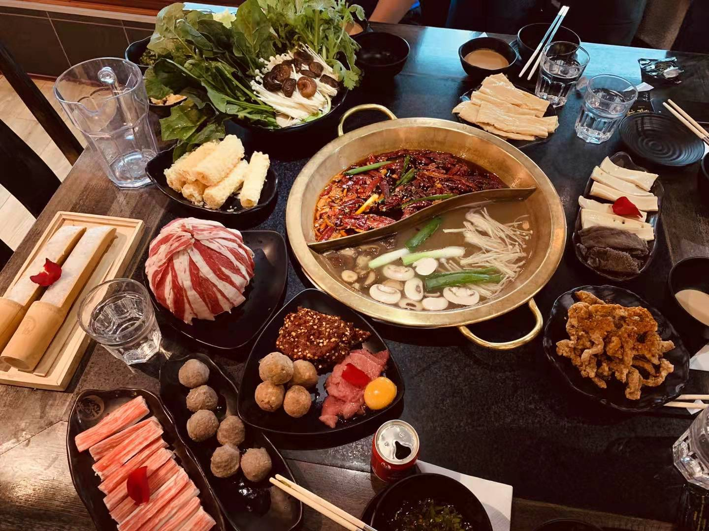
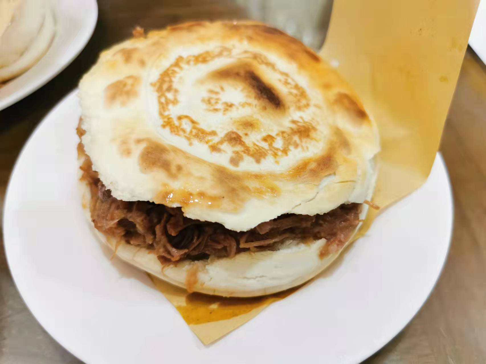
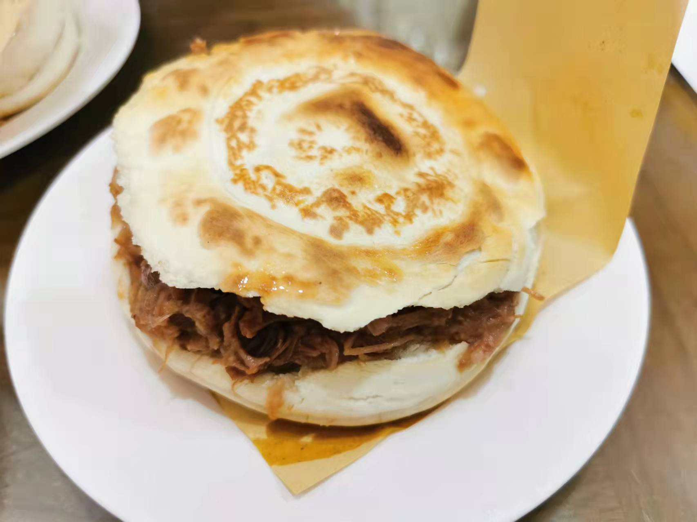
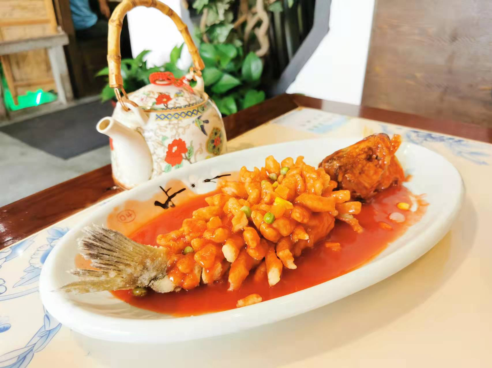
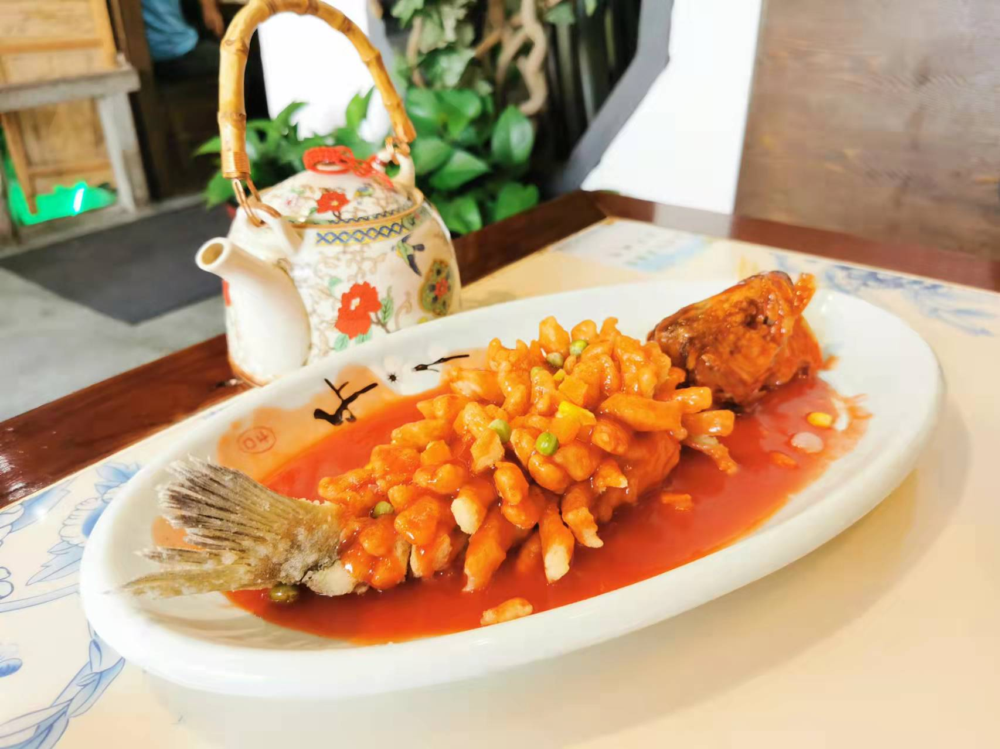

China is country with abundant resources and a vast territory. Food culture varies in each part of China.
Chengdu
Chengdu is located in Sichuan Province. Food culture in Sichuan is well-known for being super spicy.

 Xi'an
Xi'an is located in Shaanxi Province. It is one of the oldest cities in China. The noodles and lamb here are very famous.
Xi'an
Xi'an is located in Shaanxi Province. It is one of the oldest cities in China. The noodles and lamb here are very famous.
 

 Guangzhou is the largest city of Guangdong province in southern China. It is one of the most populated and prosperous city in China.
Guangzhou is the largest city of Guangdong province in southern China. It is one of the most populated and prosperous city in China.


 Suzhou
Suzhou is located in Jiangsu Province. It belongs to the Yangtze River Delta region.

Suzhou
Suzhou is located in Jiangsu Province. It belongs to the Yangtze River Delta region.
